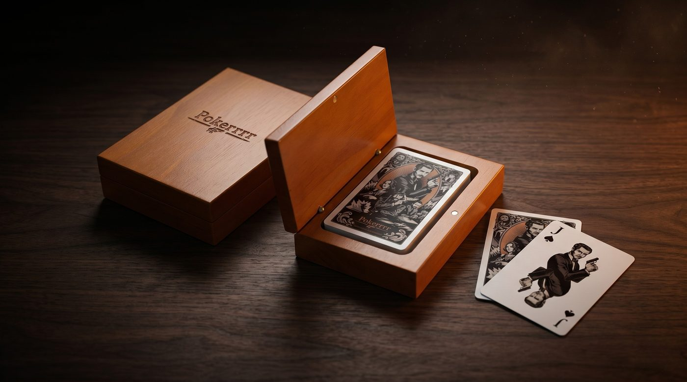

To host a poker night, decide on your format first — in-person or online — then set your buy-in, blind structure, and game type before anyone sits down. For online games, Pokerrrr 2 lets you create a private club in under two minutes: choose your stakes, invite friends with a code, and deal the first hand without a casino account. The rest of this guide covers both formats, from chip stacks to screen setups, so you can run a smooth game regardless of where everyone is. This guide covers everything—from choosing the right game to setting the blind structure, from stacking chips to launching a virtual poker night that actually feels like a real session. Let's deal you in.

What Makes a Great Poker Night?
A great poker night comes down to three things: the right group of players, a well-chosen game format, and a setup that keeps the action moving without confusion. Get these right, and the night runs itself.
The best poker nights aren't about who has the fanciest chip set. They're about flow. Everyone knows the game, the blinds escalate at the right pace, and nobody's Googling hand rankings mid-pot. Preparation is the difference between a memorable night and a frustrating one.
Here's what separates a solid poker night from a forgettable one:
• Clear game format communicated in advance • Enough chips for every player with a logical denomination system • A blind structure that matches your time frame • Snacks and drinks that don't destroy the cards • A way to settle up cleanly at the end
How Do You Plan a Poker Night at Home?
Planning a poker night at home requires choosing your game format, preparing a chip set with clear denominations, setting a blind schedule that fits your session length, and inviting 4–9 players who actually know the basics—or are willing to learn fast.
Supplies You'll Need
• A poker table or a large, flat surface with a tablecloth • At least 2 decks of quality playing cards • A chip set with 3–4 denominations • A dealer button and blind markers
• A timer app for blind levels
• Cash or a payment app for buy-ins and settlements

The right chips, the right cards, the right table presence. Everything you need to run a poker night that feels like a real table — built for agents who take the mission seriously. ENTER THE POKERRRR 2 SHOP →
Choosing Your Game
Texas Hold'em is the default for a reason—most people know the rules, and the strategy runs deep enough to keep things interesting across multiple hours. If your group is experienced, mix in Omaha or Pot-Limit rounds. For something lighter, check out easy poker games that work well for mixed-skill groups.
Setting the Blind Structure
Your blind structure determines the pace of the entire night. For a casual 3-hour game, start blinds low and increase every 20–30 minutes. For a tournament feel, tighten the levels to 15 minutes. Need a deeper breakdown? Our guide on covers every format.
Example 3-hour structure: • Level 1 (30 min): 25/50 • Level 2 (30 min): 50/100 • Level 3 (30 min): 100/200 • Level 4 (30 min): 150/300 • Level 5 (30 min): 200/400 • Level 6 (30 min): 300/600
How Do You Host a Virtual Poker Night Online?
To host a virtual poker night online, download Pokerrrr 2, create a private club, invite your friends via a share link, choose your game type and stakes, and launch the table. The entire setup takes under two minutes—no accounts, no complicated lobby navigation.
Virtual poker nights have gone from a pandemic workaround to a permanent fixture. The convenience is unbeatable—no travel, no chip counting, no arguing over side pots. And with Pokerrrr 2, you get features that most home games can't match:
• Private clubs with invite-only access • Multiple game types: Hold'em, Omaha, Short Deck, OFC, and more • Sit & Go tournaments that auto-manage blind levels • Built-in chip tracking—no spreadsheets needed • The signature peek-card mechanic that recreates the tension of a live squeeze
Step-by-step to set up a private game
- Download Pokerrrr 2 (iOS or Android)
- Tap 'Friendly & Club' and tap 'host'
- Choose your game format, stakes, and player count
- Share the game code or invite link with your crew
- Launch the table and start playing
Making Your Virtual Poker Night Feel Real
The gap between virtual and in-person poker nights is smaller than you think. Jump on a video call while playing on Pokerrrr 2—the table talk, the reactions, the trash talk—it all translates. Some groups keep a Discord or Zoom running alongside the game for the social element.
For recurring groups, set up a standing club on Pokerrrr 2. Your club saves member lists, game history, and leaderboards. Over time, you build a genuine poker community with rivalries, running jokes, and season-long standings.
Pro tip: Run a weekly virtual poker night as a Sit & Go tournament. It gives the night a natural endpoint, creates a clear winner, and the escalating blind structure keeps the energy building toward a climax.
How Do You Set Up Poker Chips and Blinds?
Set up poker chips by assigning 3–4 color denominations that match your blind structure, then distribute an equal starting stack to every player. A standard home game gives each player 50–100 big blinds to start, ensuring enough play without the game dragging.
Standard chip color conventions: • White: 25 (or your smallest denomination) • Red: 100 • Blue: 500 • Black: 1,000
For a $20 buy-in with 25/50 starting blinds, give each player: • 8 white chips (200) • 8 red chips (800) • 2 blue chips (1,000) • Total: 2,000 in chips
What Are Common Poker Night Mistakes to Avoid?
The most common poker night mistakes include unclear rules before the game starts, a blind structure that doesn't match the session length, inviting too many beginners without a quick rules briefing, and poor chip denominations that slow down betting.
Mistake 1: No rules discussion upfront. Even experienced players may have different house rules. Clarify straddles, string bets, and table stakes before the first hand.
Mistake 2: Blind levels that are too slow or too fast. If blinds barely move, the night drags. If they spike, short stacks get eliminated before they've had a drink.
Mistake 3: No plan for rebuys. Decide in advance—are rebuys allowed? Until what level? Unlimited or capped? Ambiguity here creates conflict.
Mistake 4: Bad chip denominations. If your smallest chip is worth 100 and your starting blind is 25, you've already created a problem. Match your chips to your structure.
Mistake 5: Ignoring the social element. Poker night isn't just about the cards. Good music, decent snacks, and a comfortable setup make the difference between 'that was fun' and 'when's the next one?'
The Settlement Problem (And How to Solve It)
One of the most awkward parts of any home poker night is settling up at the end. Cash games require tracking everyone's buy-ins, rebuys, and final chip counts. If you're using physical chips, someone needs to do math at 1 AM—and that's when mistakes happen.
Solutions: Use a poker bankroll tracking app, designate one person as the banker before the game starts, or simply play on Pokerrrr 2 where chip tracking is automatic. For home games, take a photo of everyone's chip stack at the end as a record.
FAQ
Q1: How many players do you need for a poker night? A: A poker night works best with 6–9 players for a full table experience. You can run a solid game with as few as 4 players, and Pokerrrr 2 supports tables from 2 to 9 players. For larger groups, set up two tables or run a tournament format.
Q2: What's the best poker game for beginners at a poker night? A: Texas Hold'em is the best choice for beginners because the rules are straightforward and most people have at least seen it played.
Q3: How long does a typical poker night last? A: A typical poker night runs 3–4 hours. Cash games can go as long as players want, while a Sit & Go tournament with 6–9 players usually wraps up in 2–3 hours depending on the blind structure.
Q4: Can you host a poker night online for free? A: Yes. Pokerrrr 2 lets you create a private club and host games with friends for free. No real money is required—you can play with in-app chips and simply track results for bragging rights.
Q5: What do you need to set up a poker night at home? A: At minimum: a flat table, one deck of cards, and something to use as chips. For a proper setup: a quality chip set with 3–4 denominations, two decks of cards, a dealer button, blind timers, and comfortable seating. For zero-setup hassle, host your poker night on Pokerrrr 2.
Ready to host your next poker night? Download Pokerrrr 2 and set up a private table in under 2 minutes. No chips to count, no arguments over side pots—just pure poker with your crew.
About Pokerrrr 2: Pokerrrr 2 is a mobile poker app available on iOS and Android that lets you host private poker games with friends or join public tables with players worldwide. Supported formats include Texas Hold'em, Omaha (PLO), Short Deck, Sit & Go, Double Board Hold'em, and Open Face Chinese (OFC). Games are play-money only and no real-money gambling is supported within the app.